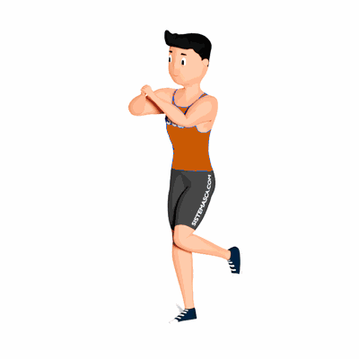

Agachamento Unilateral com Equilíbrio Posterior

O exercício trabalha a estabilidade do joelho, também o fortalecimento dos membros inferiores e abdômen.
Ficha Técnica
Tipo: Funcional
Grupo Muscular: Perna
Aparelho: Nenhum
Músculos: Nenhum
Como realizar
- Em pé, tronco reto e pés nas larguras dos ombros;
- Flexione o joelho da perna esquerda para atrás, você irá ficar apoiado ao chão somente com a perna direita;
- Com a coluna reta e abdome contraído, desça o corpo flexionando o joelho;
- Com a força da coxa, empurre o corpo para cima retornando à posição inicial;
- Após terminar as repetições, realize os movimentos invertendo a posição das pernas.
 RC STORE
RC STORE